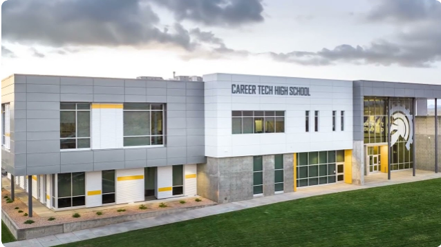

Pathways
We also offer pathways in Health Science, Engineering, Culinary Arts, and Business. Each pathway provides students with access to modern equipment, expert instructors, and valuable internship opportunities.

The Computer Science Pathway provides students with a deep understanding of programming, cybersecurity, software development, and emerging technologies. Through project-based learning, coding challenges, and industry partnerships, students gain experience in problem-solving, computational thinking, and collaboration.